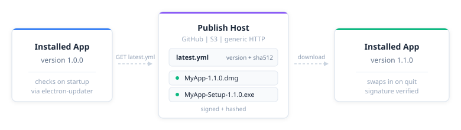

enable_auto_updates(
"path/to/app",
provider = "github",
owner = "your-username",
repo = "your-app-repo"
)Auto-updates ship by publishing a signed artifact and a matching latest.yml to a place the app knows to check. shinyelectron wires your project up to electron-updater, which does the checking, downloading, and swap-on-quit.

Pick a publish host
Three backends are supported. Pick the one that matches how you already ship software.
| Provider | Best for | Requirements |
|---|---|---|
| GitHub Releases | Open source projects | Public or private GitHub repo |
| S3 | Enterprise deployments | AWS S3 bucket |
| Generic HTTP | Custom infrastructure | Any HTTP server |
Quick start
Point the app at a GitHub repo and re-export. Everything else follows from configuration.
enable_auto_updates() writes the settings to _shinyelectron.yml. Verify them at any time with:
check_auto_update_status("path/to/app")GitHub Releases
GitHub Releases is the default, and the right choice for most open-source projects.
Configure the app
Tell the app where to look, and choose whether it prompts the user before downloading.
enable_auto_updates(
"path/to/app",
provider = "github",
owner = "myorg",
repo = "my-shiny-dashboard",
check_on_startup = TRUE,
auto_download = FALSE # Prompt user before downloading
)Build the app
Build as usual.
export("path/to/app", destdir = "build")Publish a release
- Go to your repo on GitHub.
- Click Releases, then Create a new release.
- Create a tag such as
v1.0.0. - Upload the built installers:
-
MyApp-1.0.0.dmg(macOS) -
MyApp-Setup-1.0.0.exe(Windows) -
MyApp-1.0.0.AppImage(Linux)
-
- Publish the release.
Note
File names must match
{productName}-{version}.{ext}. electron-updater uses that pattern to find artifacts.
What the user sees
On the next launch, a version higher than the installed one triggers the update cycle:
- The app checks on startup when
check_on_startup = TRUE. - A notification tells the user an update is available.
- The installer downloads, silently if
auto_download = TRUE, otherwise on consent. - The app prompts to restart and install.
Configuration
The full updates block in _shinyelectron.yml:
updates:
enabled: true
provider: "github"
check_on_startup: true # Check when app starts
auto_download: false # Download without prompting
auto_install: false # Install on app quit
github:
owner: "your-username"
repo: "your-repo"
private: false # Set true for private reposThree knobs, one pipeline
Three flags drive three stages. check_on_startup asks whether an update exists. auto_download fetches it. auto_install applies it on quit.
| Setting | Behavior |
|---|---|
check_on_startup: true |
Checks for updates when app launches |
auto_download: true |
Downloads updates silently in the background |
auto_install: true |
Installs the update when the user quits the app |
Sensible default: check automatically, but let the user choose when to download and restart.
updates:
check_on_startup: true
auto_download: false # Let user decide
auto_install: false # Let user decide when to restartSecurity patches and regressions benefit from the aggressive posture:
updates:
check_on_startup: true
auto_download: true # Download immediately
auto_install: true # Install on next quitPrivate repositories
Private repos require a token in the user’s environment.
updates:
github:
owner: "my-org"
repo: "private-app"
private: trueExport GH_TOKEN before launch.
# macOS/Linux
export GH_TOKEN=ghp_xxxxxxxxxxxx
# Windows
set GH_TOKEN=ghp_xxxxxxxxxxxxS3
Point at a bucket for enterprise distribution.
updates:
enabled: true
provider: "s3"
s3:
bucket: "my-app-updates"
region: "us-east-1"
path: "/releases"The bucket should mirror the pattern GitHub Releases produces: per-platform manifests beside the installers.
my-app-updates/
└── releases/
├── latest.yml # Update manifest
├── latest-mac.yml # macOS manifest
├── latest-linux.yml # Linux manifest
├── MyApp-1.0.0.dmg
├── MyApp-Setup-1.0.0.exe
└── MyApp-1.0.0.AppImageAWS credentials come from the environment.
export AWS_ACCESS_KEY_ID=xxx
export AWS_SECRET_ACCESS_KEY=xxxGeneric HTTP
Anything that can serve static files works.
updates:
enabled: true
provider: "generic"
generic:
url: "https://updates.example.com/releases"Your server must deliver:
- Update manifests (
latest.yml,latest-mac.yml,latest-linux.yml). - The matching binaries.
- CORS headers if the assets are cross-origin.
A minimal latest.yml looks like this:
version: 1.1.0
files:
- url: MyApp-Setup-1.1.0.exe
sha512: abc123...
size: 75000000
path: MyApp-Setup-1.1.0.exe
sha512: abc123...
releaseDate: '2024-01-15T12:00:00.000Z'Code signing
Warning
Unsigned apps trigger Gatekeeper and SmartScreen warnings. Sign production builds.
macOS
Supply a certificate, its password, and an Apple ID for notarization.
export CSC_LINK=/path/to/certificate.p12
export CSC_KEY_PASSWORD=your-password
export APPLE_ID=your@email.com
export APPLE_APP_SPECIFIC_PASSWORD=xxxx-xxxx-xxxx-xxxxWindows
A PFX certificate and password are enough.
export CSC_LINK=/path/to/certificate.pfx
export CSC_KEY_PASSWORD=your-passwordTurning updates off
disable_auto_updates("path/to/app")Or edit the config directly.
updates:
enabled: falseTroubleshooting
The check fails
Symptom: “Error checking for updates.”
- Confirm the machine is online.
- Confirm the GitHub repo exists and is reachable.
- For private repos, confirm
GH_TOKENis set. - Check firewall rules.
Downloads, never installs
Symptom: the update arrives but the app does not swap in on restart.
- The app needs write permission to its own install directory.
- On macOS, the app must live in Applications.
- Antivirus software can quarantine the new artifact.
Always “No updates available”
Symptom: the app never sees a newer version.
-
package.jsonversion must match the release tag. - Artifact names must follow
{productName}-{version}.{ext}. - The release must be published, not saved as a draft.
Debug logging
Turn on verbose logs.
export ELECTRON_ENABLE_LOGGING=1Logs land per platform:
- macOS:
~/Library/Logs/{app name}/ - Windows:
%USERPROFILE%\AppData\Roaming\{app name}\logs\ - Linux:
~/.config/{app name}/logs/
Publishing from CI
The same tag that cuts a release can build every installer. A minimal workflow:
name: Release
on:
push:
tags: ['v*']
jobs:
build:
runs-on: ${{ matrix.os }}
strategy:
matrix:
os: [macos-latest, windows-latest, ubuntu-latest]
steps:
- uses: actions/checkout@v6
- name: Setup R
uses: r-lib/actions/setup-r@v2
- name: Build app
run: |
Rscript -e "shinyelectron::export('app', destdir = 'build')"
- name: Upload to Release
uses: softprops/action-gh-release@v3
with:
files: build/electron-app/dist/*See the GitHub Actions vignette for the full template.
Next steps
-
Configuration: full reference for
_shinyelectron.yml. - GitHub Actions: the CI template that ships releases.
- Customizations: splash screen, system tray, application menu.